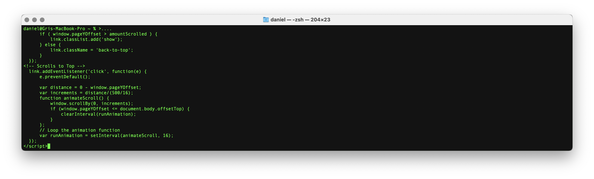
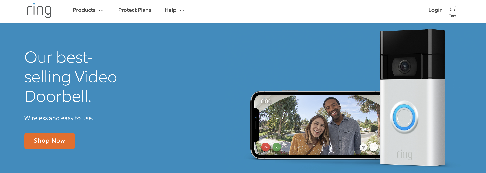
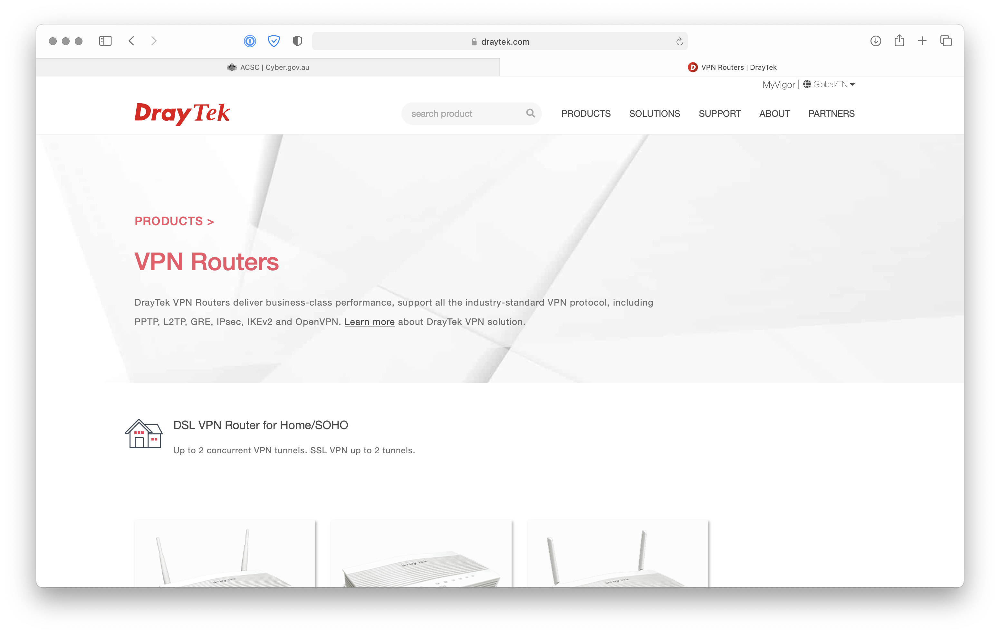
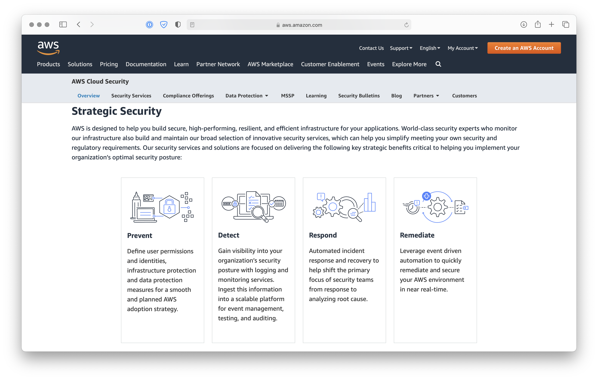
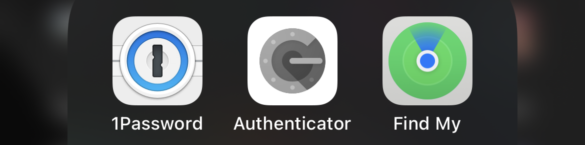
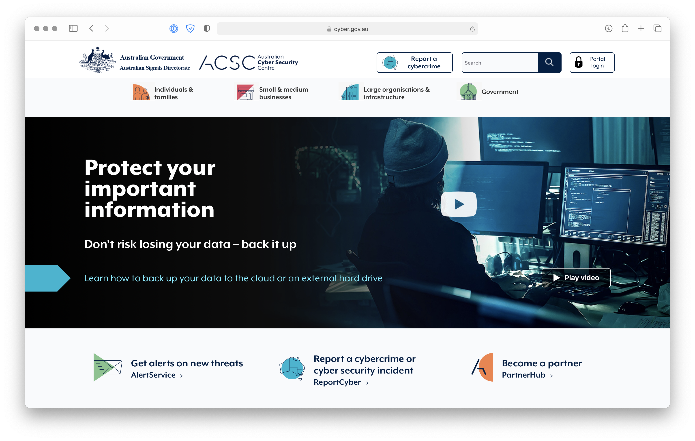
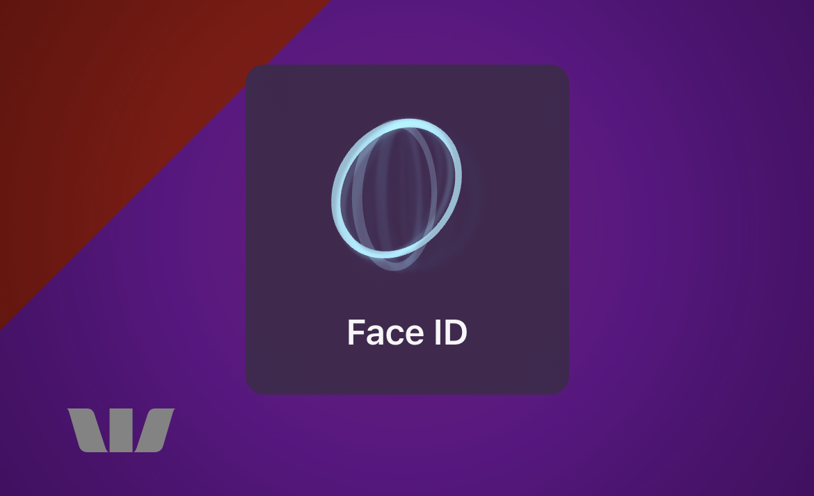

What is Cybersecurity?
Article written by Daniel Nanthathammiko@S3196237

What is Cybersecurity? Cybersecurity, also known as IT (Information Technology) Security is the act of securing networks and IT systems from threats, whether they are outside of systems or from within our workplaces, homes or somewhere in-between.
The privacy and protection of data from exploits, malicious threats and nefarious individuals/organisations has become paramount for anyone engaging with systems and devices connected to the internet as well as being able to fully trust IoT systems so that our lives will not be negatively impacted by the exponential growth in technology and connected devices by leaving open doors for exploits. (ibm n.d.)
Currently we can find cybersecurity measures implemented in nearly all devices or web-applications we interact with such as our phones, laptops, IoT devices as well as web applications such as banking, government services and so on.
The technology at the heart of cybersecurity is guided by the threats at hand as cybersecurity isn’t implemented with a singular technology stack. It is a layered approach to fully protect our systems from threats that will occur on multiple layers. These layers can include:
Infrastructure security of IT and sensitive data: Physically securing the premises to protect sensitive data from theft, damage, or loss. This could be locks on your doors with limited access, security systems such as alarms and surveillance. This level of security can be implemented at your workplace or home for reasonable costs and is the first thing to be implemented.
As an example, at my workplace I have installed:
- New deadlocks and latch guards to prevent brute force entry.
- Coded alarm system that rings staff phones when the alarm is tripped. This also ensures that any brute force entry should be short lived as the alarm is extremely loud.
- Surveillance system such as a Ring doorbell and camera system that provides staff with visual confirmation of those entering the building and can check credentials.
- These measures ensure that physically, we will be able to protect our physical IT system and data stored at our premises. As the technology regarding surveillance and building security continues to grow in awareness and reduce in costs, there will no longer be any barriers to a secure physical location where data is stored for businesses of all sizes and for the home.

Network Security
This is usually the first we would associate with cybersecurity. Protecting your internal networks (LAN) can be as simple as having passwords on all computers and devices that automatically connect to your intranet and only providing certain permissions to certain users and their devices. Other ways to protect your network can include:
- This can include something as basic as not providing external users access to your Wi-Fi network or not allowing devices to search your network for systems on your network.
- Ensuring your follow manufacturer guides when setting up routers/modems as to not expose and open your network up to malicious attacks.
- Using strong passwords for your LAN
- Actively monitoring devices connected to your LAN.
- Setting up guest networks for friends, families, visitors that require Wi-Fi access with timed passwords.

As time goes on, routers and modems are becoming increasingly intelligent and cost effective when it comes to fully securing your LAN from attacks. Recently I purchased a Draytek modem with a built OpenVPN configuration to secure my home network as well as my work one. This is a layer ontop of a Synology NAS I have setup. The technology is still complicated if you want to extract all of the benefits being offered, however it is now within reach of many home users for securing networking and internet activities.
Application security
As we utilise more conveniences online, Application Security has become increasingly urgent to ensure end user safety. Let’s take banking as an example, a large majority of Australians now use online banking on their phones or computers as it is incredibly convenient and instantaneous.
The banks now provide significant protections to end users for two major reasons, to ensure the end user isn’t doing anything that will put themselves at risk but also to ensure banks minimise their liabilities such as an end user sending money to the wrong person or typing in their passwords into a phishing site.
- Safety measures such as a message when sending money asking you to confirm the amount and to then type in a code to execute the transfer. This is to ensure that a) you are indeed wanting to send that value to that account and b) you are the account holder as you have the authorised device.
- 2 Factor Authentication (2FA) has become very standard to ensure that when you sign into and account, you are the account holder and have the approved device to execute the login.
- An email being sent about “suspicious activity” with the general location of the device being used to sign in to the account.
This doesn’t necessarily mean that it is full proof as there are ways to circumnavigate these protective measures if one is so inclined. You could port a SIM card if you have enough relevant details of a target which would then gain you 2FA if a phone number is being used.
This is changing though and is moving more towards using authenticator apps as the only way to beat this is to physically clone a phone, which would require physical access to the device, which would be too difficult and time consuming to do.
Cloud security
The cloud has made our lives a lot easier to manage many aspects of our work and personal lives. I do take for granted the ease of working on multiple devices yet having all my work readily available and backed up. Encryption is the key here though as we require complete protection when we trust all our work and personal files, photos and documents to live online, free for exploitations and theft.
- Encryption at the storage site of the data (including physical infrastructure security as discussed earlier)
- Encryption of the data in motion which means having our data secure in transmission and unreadable from anyone/anything sniffing traffic.
- Encryption on the device to ensure the unpacked data is still safe.
Many providers of enterprise or commercial cloud services offer a high-level of cloud security as it is an expectation. As an example, Amazon Web Services offers “Strategic Security” under 4 main objectives, Prevent (user permissions and identities, infrastructure protection and data protection measures), Detect (visibility into your organization’s security posture with logging and monitoring services), Respond (Automated incident response and recovery to help shift the primary focus of security teams from response to analyzing root cause) and Remediate (Leverage event driven automation to quickly remediate and secure your AWS environment in near real-time).(Amazon Web Services, Inc. 2019)

End-user education
Education of best practice with IoT devices and computers connected to LAN with sensitive data is something that is the simplest thing to implement however is probably where most systems are exposed. Simple things such as reusing passwords or clicking on links and ads online can expose any home or work IT network to malicious attacks, exploits and data theft. In my experience I have educated my staff and colleagues:
- To not reuse passwords and to use a password manager app to provide high level and unique passwords as well as changing passwords regularly.
- Use ad blockers such as AdGaurd or U-Block Origin to remove anything that can expose our network when browsing online
- Never to provide our main Wi-Fi password so that our systems are protected, it would be like handing the office keys to a random and allowing them to cut a key.

Many interfaces and devices themselves now make many attempts to secure systems and interactions with the online environment as secure as possible. This includes measures such as Safari and Chrome web browsers offering to provide strong, uniqgue passwords to protect your different online accounts from reusing passwords and login credentials in the event a leak occurs.
Mobile devices such as phones, tablets and laptops now have facial recognition or biometric logins.
We still see continual data breaches, leaks, exploits and thefts of user data. Providers of online services as well as devices continue to provide a more secure experience and the promise of secure data management and storage. In a few year’s time, the advice that is provided will generally be the same, the differences we will see in the future is the execution of the security protocols on a device, LAN, WAN and cloud basis.
There will always be exploits, data leaks, breaches and thefts as those wanting exploit systems and people’s data, funds etc will continually work to achieve their goals.
There is a continual positive impact from any cybersecurity measures implemented today and the work being done to secure our online lives. We continue to see many more conveniences with a secure online and connected environment as it has become so fundamental to how we now live our lives and interest with each other and businesses.
With continual advances in cybersecurity, we will hopefully see less malicious activities such as scams of those that are not so computer literate to minimal issues from people who just aren’t detail oriented. Unfortunately, there is so much that can be done regarding cybersecurity if the end users don’t take basic steps to educate themselves on best practices to maintaining online security and safety.

Organisations such as the Australian Cyber Security Centre offer individuals, business at any scale as well as government organisations information, education and advice on how to best secure your systems, information on current threats and exploits as well as very basic do’s and don’ts to ensure a secure online existence.(www.cyber.gov.au. n.d.)
We may see some redundancies in systems as cybersecurity grows with new technologies such as cloud services. Some redundancies include, iPhones dropping the home button which used to provide biometric login (via thumb print) and has now been replaced with a camera that can provide 3D facial recognition for login (Face ID). This has become standard for apps within the iOS ecosystem due to the secure nature of your face (in most cases) and has made passwords in this capacity redundant as the primary way to access the device however, we have seen difficulties in utilising facial recognition at all times due to masks (COVID).

With advancements in cybersecurity and the heavy reliance we now require from this sector of IT, we will continue to see significant growth (as we have seen in IT, Programming etc) as there just aren’t enough people in this sector. This creates a reliance on the larger cybersecurity vendors and cloud services as they would employ a significant portion of this workforce. Searching Seek.com.au, there are currently 787 Cybersecurity jobs paying over $150,000 AUD (SEEK. n.d.). If you looked at the tech centre of the world, San Francisco there is approximately the same amount of Cybersecurity roles as we see in Australia with a USA national average pay of $190,000 AUD with pay soaring up over $300-400k AUD for very senior roles.(ZipRecruiter, Inc. n.d)
Cybersecurity already affects our daily lives as we utilise it from the moment we wake up to the moment we lock our phones and go to bed without even considering it. Like many others, rely on cybersecurity when I unlock my phone and check my emails and messages that have come through in the evening.
My work emails are encrypted and my device logs into my email server to fetch the data automatically for me. As my phone has my email login credentials stored, I don’t notice the layers of encryption and security as my only interaction here is to use Face ID to log in to my phone and open my mail app. Many people wouldn’t even realise the many security layers being utilised and the many interactions between different technologies just to perform this standard task.
As I have learnt more about basic systems security and personal online security, I have implemented pretty simple yet effective measures to ensure a reasonable amount of security. These measures include:
- Password manager
- VPN
- Dedicated emails for certain usages
- Computer logins with no admin rights for specific usages
- Only connecting to secure and known Wi-Fi networks where possible
- Content blockers
I advocate to family and friends the simplicity of the measures I have taken and help them to utilise these same smarter and secure measures. I attempt to educate in basic internet street smarts to provide us (educate workmates for example) with a secure online life.